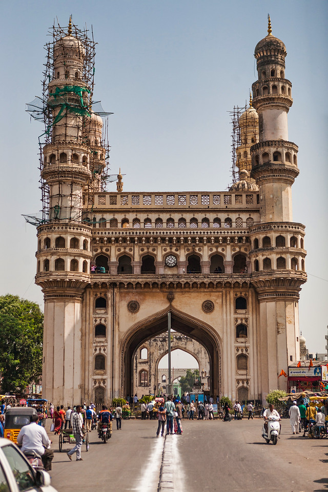

2.Charminar
The capital city of Telangana, Hyderabad is a popular tourist destination and presents its visitors with a mesmerising contrast of age old traditions, culture at one end and modern facilities, amenities of a metropolitan city at the other end. Hyderabad is one city, which has no dearth of tourist attractions.
Read more...